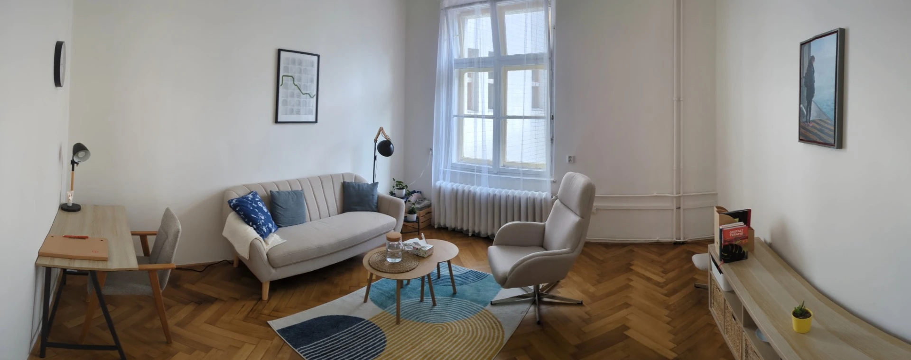
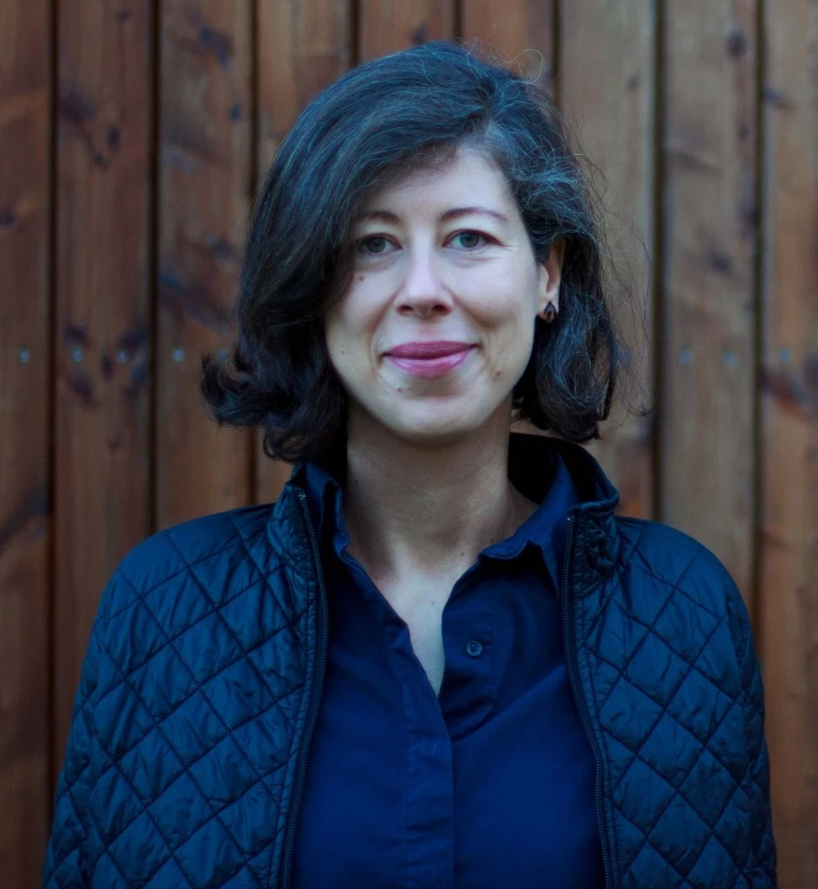

Pomohu Vám vybudovat vztahy, které vás budou podporovat, nikoliv vyčerpávat. Společně najdeme cestu k laskavějšímu postoji k sobě i druhým, tak abyste dokázali zvládat životní výzvy s větší lehkostí a jistotou.
- Individuální a párová terapie v centru Prahy nebo online
- Bezpečný prostor pro dospělé a dospívající (15+)
- Terapie v češtině a angličtině
O mně
Vztahy jsou základem naší spokojenosti i zdrojem našich největších trápení. Ve své praxi se zaměřuji jak na to, co se děje mezi lidmi, tak na to, jaký vztah máte sami k sobě.
Pomohu vám získat laskavější postoj k sobě samým, abyste se dokázali v těžkých chvílích podpořit nikoliv zkritizovat. Povedu vás k bezpečným a upřímným vztahům s druhými, které vás nebudou vyčerpávat. Věřím, že dobrými vztahy posílíte vaši schopnost zvládat život se všemi těžkostmi, které přináší.

Vzdělání a Praxe
Svůj odborný základ stavím na studiu psychologie na Univerzitě Karlově a komplexním psychoterapeutickém výcviku v Gestalt terapii. Průběžně se dále vzdělávám v tématech, která jsou pro mou práci klíčová. Svou odbornost aktuálně profiluji skrze výcviky zaměřené na párovou terapii a podporu dospívajících. Díky svým zkušenostem v klinické oblasti jsem schopna nabídnout vhled do otázek psychického zdraví a diagnostický úsudek. Další zkušenosti a vzdělání mi umožňují klienty dobře podpořit v krizových situacích a při práci s traumatem.
Jsem řádnou členkou České asociace pro psychoterapii (ČAP), ve své práci tedy dodržuji etické standardy ČAP, dále se odborně vzdělávám a svou práci pravidelně superviduji.
Na základě svých zkušeností dokáži nabídnout přístup, který je odborně ukotvený, ale zároveň lidský a přizpůsobený vaší jedinečné situaci.
Vzdělání
- Psychologie, Filozofická fakulta Univerzity Karlovy v Praze – titul Mgr., 2008 - 2013
- Systematický psychoterapeutický výcvik v Gestalt terapii, IVGT Praha, 2016 - 2022
- Postgraduální výcvik v párové terapii, 2026
- Práce s dospívajícími, mladými dospělými a jejich rodiči pomocí gestalt terapie a modelu Violet Oaklanderové - workshop pod vedením Lynn Stadler, 2025
- Kurz mindfulness, mindfullife.cz, 2015
- Kurz Kompletní krizové intervence, Déčko Liberec, z.s. , 2014 - 2015
- Akreditovaný výcvik v koučování Gestalt přístupem, Gestalt Essence, 2013
Praxe
- Soukromá psychoterapeutická praxe, od 2018
- Psychiatrická ambulance Psychiatrie Praha, 2019 - 2022, individuální psychoterapie a psychodiagnostika
- Psychoterapeutické sanatorium Ondřejov, 2018 - 2019, vedení skupinových a individuálních psychoterapií na oddělení závislostí
- Psycholožka v bezpečnostních sborech (Policie ČR a Celní správa ČR), 2013 - 2017
Služby
Ve své práci vycházím z principů gestalt terapie. Gestalt věří, že změna přichází ve chvíli, kdy sobě a situaci, ve které se nacházíme, více rozumíme a jsme schopni vidět své potřeby a zdroje. Nesnaží se hodnotit a interpretovat, ale pochopit a porozumět. Nepřináší univerzální rady a návody, ale pomáhá hledat vaše vlastní řešení.
V praxi to znamená, že nebudu jen mlčenlivým posluchačem. Budu s vámi vést živý dialog, nabízet vám zpětnou vazbu a pomáhat vám uvědomit si, co se ve vás děje právě teď. Cílem není jen mluvit o minulosti, ale najít vaše vnitřní zdroje pro lepší přítomnost.
První sezení je o vzájemném seznámení. Vy popíšete, co vás přivádí, a já vám ukážu, jakým způsobem můžeme na vašem tématu pracovat. Po třech setkáních společně vyhodnotíme, zda vám můj přístup vyhovuje.
Díky online konzultacím a možnosti terapie v angličtině nabízím podporu i těm, kteří často cestují nebo žijí v mezinárodním prostředí.
Forma spolupráce:
- Individuální terapie pro dospělé a dospívající od 15 let.
- Párová terapie.
- Setkávání osobně a/nebo online. Formy setkávání je možné kombinovat.
- S klienty pracuji v angličtině a češtině.

Individuální terapie
Individuální terapie je prostor, kde nemusíte na své trápení být sami, ať už vás tíží konkrétní diagnóza jako deprese či vyhoření, nebo cítíte obecnou nepohodu a ztrátu smyslu. Pomohu vám prozkoumat, co ve svém životě právě teď potřebujete, a najít zdroje k tomu, abyste svůj život prožívali jako naplňující.
S čím se na mě můžete obrátit:
- Vztah k sobě: Necítím se dobře sám/a se sebou.
- Vztah s druhými: Nejde mi to ve vztazích. Partnerských, kamarádských, s mými rodiči nebo dětmi. Cítím se osamělý/á.
- Náročné životní situace: Život je teď pro mě náročný, nevím si rady a potřebuji podpořit.
- Nespokojenost: Jsem nespokojený/á a nevím, co s tím.
- Emoční zátěž: Zažil/a jsem trauma a chci se s tím vypořádat. Trápí mě úzkosti, deprese, vyhoření.
Párová terapie
V párové terapii vytvářím nestranné prostředí pro partnery, kteří chtějí obnovit vzájemnou důvěru nebo společně projít náročnou krizí. Pomohu vám nahlédnout na potřeby vaše i potřeby vašeho vztahu jako celku. Budeme společně hledat cesty, jak je srozumitelně komunikovat a naplňovat tak, aby pro vás partnerství bylo opět bezpečným a naplňujícím místem.
Jako pár můžete zažívat:
- Jsou témata, na kterých se neshodneme a potřebujeme pomoct je vyřešit.
- Máme krizi ve vztahu. Těžko hledáme společnou řeč. Hodně se hádáme.
- Došlo k nevěře nebo jinému narušení důvěry ve vztahu.
- Zvažujeme rozchod. Chceme si ujasnit, jestli pokračovat. Chceme se rozejít a chceme průvodce, který nám pomůže to udělat dobře.
Podmínky a ceník
Na první setkání se prosím objednejte prostřednictvím telefonu, emailu nebo kontaktního formuláře. Cílem úvodního setkání je vzájemné seznámení a nastavení podmínek spolupráce. Termíny dalších setkání budeme domlouvat osobně.
Účinná terapeutická práce stojí na pravidelnosti. Standardem je setkávání 1 x týdně, případně jednou za 14 dní. Konkrétní frekvenci si společně nastavíme na začátku terapeutického procesu. Frekvenci delší než 1 x 14 dní nepovažuji za efektivní, proto s ní nepracuji.
Bezplatné zrušení sezení je možné alespoň 24 hodin předem, a to telefonicky nebo e-mailem. Pokud setkání zrušíte později, částku účtuji v plné výši. Děkuji, že respektujete můj čas a kapacitu.
Jsem zapojena do preventivních programů zdravotních pojišťoven, ze kterých můžete čerpat příspěvky na psychoterapii – např. VZP až 5 000 Kč na 10 sezení. Aktuální podmínky doporučuji ověřit přímo u vaší pojišťovny.
Základním principem práce je pro mne mlčenlivost. Informace o Vás považuji za důvěrné. Při své práci dodržuji etický kodex Evropské asociace pro psychoterapii. Svou práci pravidelně superviduji, abych svým klientům zajistila bezpečný a profesionální přístup. Mou práci v současné době superviduje Ing. Marian Chrasta a Mgr. Jana Besperátová.
Dodržuji zásady ochrany osobních údajů.
Na základě zákona č. 101/2000 Sb. O ochraně osobních údajů a Nařízení Evropského parlamentu a Rady (EU) 2016/679 (GDPR) tímto informuji své klienty o způsobu zacházení a zpracování jejich osobních údajů.
- osobní údaje klientů zpracovávám v následujícím rozsahu: jméno (příjmení není nutné), telefonní číslo, příp. email, a to pouze za účelem vzájemné komunikace (rušení a přesun sezení).
- tyto údaje zpracovávám pouze já a nejsou zpřístupněny žádné třetí osobě.
- během terapie si píšu osobní poznámky, které mají anonymizovanou podobu (klienti podle nich nejsou identifikovatelní, nejsou nijak propojeny s výše uvedenými osobními údaji). Nejsou proto osobním údajem dle zákona 101/2000 Sb. a nevztahují se na ně opatření o zpracování osobních údajů dle výše zmiňovaných zákonů. Tyto poznámky slouží pro mou terapeutickou práci. Nejsou nikdy dostupné třetím osobám.
- Nejsem klinická psycholožka, proto nevedu zdravotnickou dokumentaci podle příslušných zákonů.
Tyto podmínky a ceník se vztahují na všechna sezení a pomáhají nám udržet jasnost, respekt a kvalitu společné práce.
Ceník
Terapie je plně hrazena klienty a to:
- převodem na účet předem,
- QR platbou na místě, nebo
- na základě vystavené faktury.
Číslo účtu: 2601377347/2010
Ceník je jednotný pro práci osobně i online,
v češtině nebo angličtině.
| Individuální terapie | |
|---|---|
| Dospělí a dospívající (15+), 50 minut | 1400 Kč |
| Párová terapie | |
| 50 minut | 1800 Kč |
Kontakt

Mgr. Adéla Rudá
email: info@adelaruda.cz
tel: +420 730 688 951
IČ: 07045638
Číslo účtu: 2601377347/2010
Terapii nabízím v češtině a angličtině.
Sessions available in Czech and English.
Místo setkávání:
Online
Online odkudkoliv,
kde se právě nacházíte